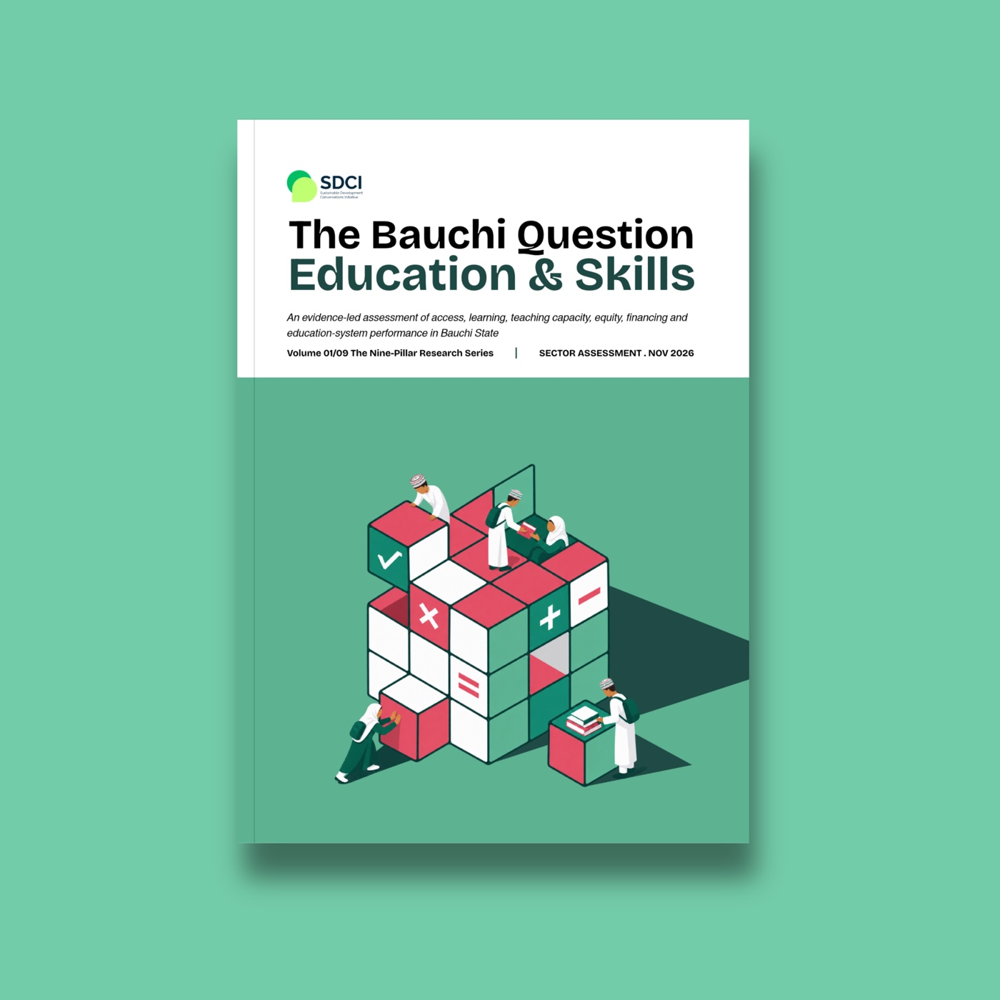

The Bauchi Question: Education & Skills
An assessment of school access, learning outcomes, teaching capacity, equity, and education financing in Bauchi State. The report pairs statewide evidence with local government profiles to identify priorities for reform.
My role · Research, data analysis, visualisation, and design
Read report (PDF)